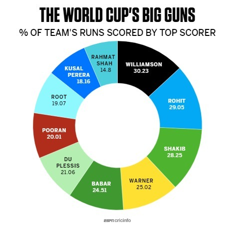
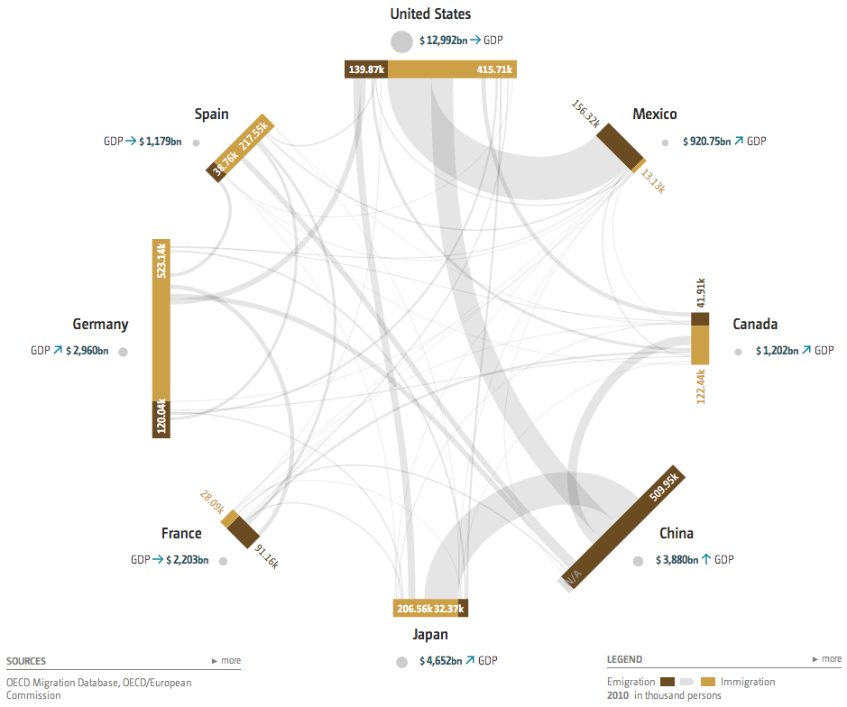
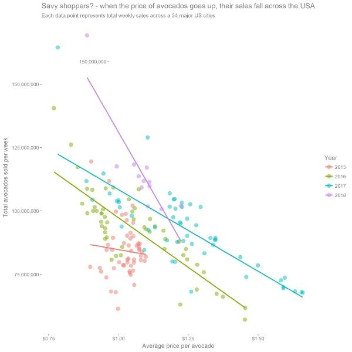
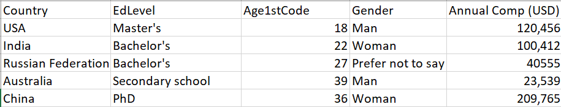

Question 1:
In this viz, we wanted to find out what proportion of team runs are scored by the top player of each team in the
ICC Cricket World Cup. The data was used from
ESPNCricInfo statistics.

- What are the data types in this viz?
Fields, specifically continuous.
- Does this visualization follow the “expressiveness” and “effectiveness” principle?
It doesn't follows the expressiveness and effectiveness principles. Each team's percentage is decreasing when reading the circle from the top in a
clockwise pattern which is a stark contrast to peoples' natural instinct to assume that the percentages would increase. In addition, the percentages do
not add up to 100 perecent which can be very difficult to interpret. It also doesn't follows the effectiveness principle since each team's portion of the circle
looks roughly the same size. A percentage of 30.23% looks almost exactly as large as 29.05%. The colors of the pieces of the circle are also not neccesary.
- Provide an alternative way you would show this data with reasoning.
I would use a bar chart where the x-axis describes all of the teams while the y-axis would include the percentages of team runs are scored by the top player.
This would allow someone viewing the diagram to see the explicit difference in percentages of team runs are scored by the top player without having to approximate
the difference in sizes like you have to when viewing the current visualization.
Question 2:
The viz. below was created using
OECD Migration Data for 2010.

- What is the dataset type?
Table, rows and columns
- Identify the “WHY”of the Task Abstraction.
This visualization is for a user to get a general idea of how many people immigrate from one country to another as well as see
which countries a particular country emigrates from and is immgrated to the most. Targets include number of immigrants/emigrants and different countries.
- Which country has the highest immigration and which has the least emigration?
Highest immigration is the United States with 415,000 people and the lowest emigration is Japan with 32,000 people.
- Which country has the least immigration and which has least emigration?
Lowest immigration is Mexico with 13,000 people and the highest emigration is China with 519,000 people.
- Identify the marks and channels used in this viz.
The marks include the bar displaying the immigration and emmigration numbers for each country, the circles highlighting each country.
The channels include the thickness and direction of the grey lines between each country as well as the the yellow and brown colors
depictinng immigration and emigration respectively.
Question 3:
The viz below is a scatterplot of two quantities.

- Identify the “WHY” of the Task Abstraction for this viz.
This visualization allows a user to see how the price of an avacado changes at different price points amongst different years.
Targets include price, time, and volume.
- How is the relationship between the quantities on the X & Y axis?
For almost every year, the volume of avacados sold have a negative correlation with the price of the avacado.
- Identify the marks and channel used in this viz.
The marks include circles that represent the number of avacados sold in one week and lines that represent the best fit line for
each year. The channels include the colors of the circles and lines.
- Which year has the highest avocado price? Which year(s) have the most and least varying price?
2017, on average, had the highest avacado price of $2. The year with the most varying price was was also 2017 with low prices of 80 cents
all the way to roughly $2. The year with the least varying price was 2015 with a low price of rouhgly 90 cents all the way to $1.10.
Question 4:
Below is a processed snippet of
Stack Overflow Annual Developer Survey of 2018 with 5 countries.

- Analyze the dataset, data types, and its availability.
The snippet dataset has 5 rows and 5 columns, making it a table dataset. The datatypes include 5 attributes and is a static dataset since
this dataset is specifically from 2018 and no new updates will be made to it.
- How would you represent the following in a single plot? Justify your choice and indicate the marks and channels in your plot.
- Country vs EdLevel
I would use a stacked column chart where the x-axis would be differenct countries and the y-axis would be education level. Each stack would
determine the education level(each level would also be a different color for easier interpretation). Marks would be lines for each bar and the
channels would be the heights of each bar and the colors in those bars.
- Gender vs Annual Comp
I would use a double bar graph where the x-axis would be gender and the y-axis would be annual compensation. Each bar would be a different color
to represent different genders. Marks would be lines for the bars and the channels would be the heights and colors of the bars.
- Age vs Median Annual Comp
I would use a simple line graph where the x-axis would be the age and the y-axis would be the median annual compensation for each age. The mark
would be the line of the linechart itself and the channels would be the directions of the line as it travels from left to right representing drops
and growth in compensation.